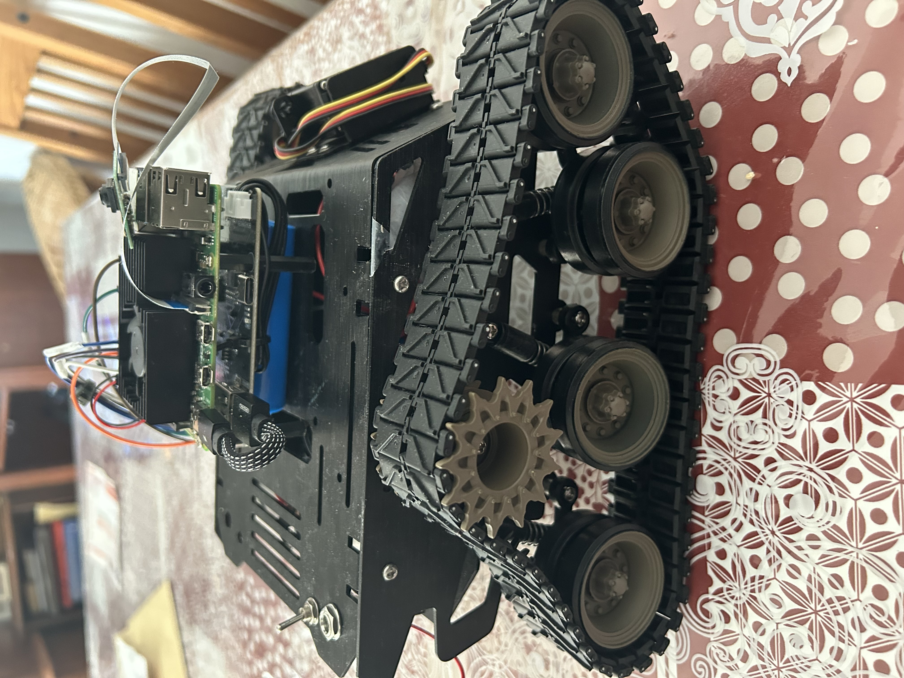
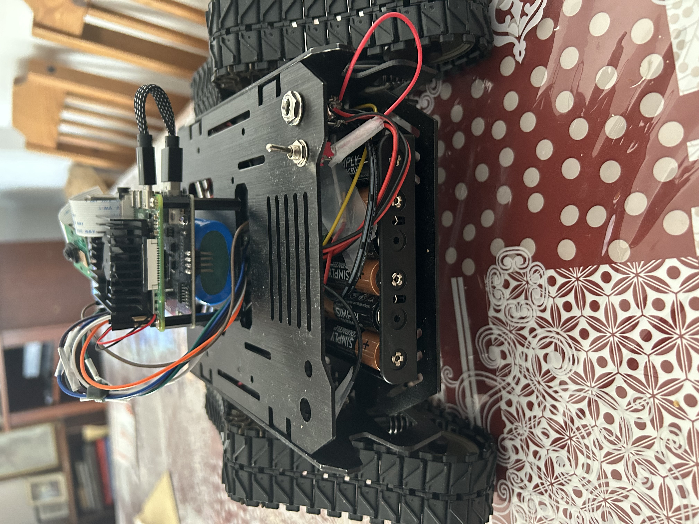
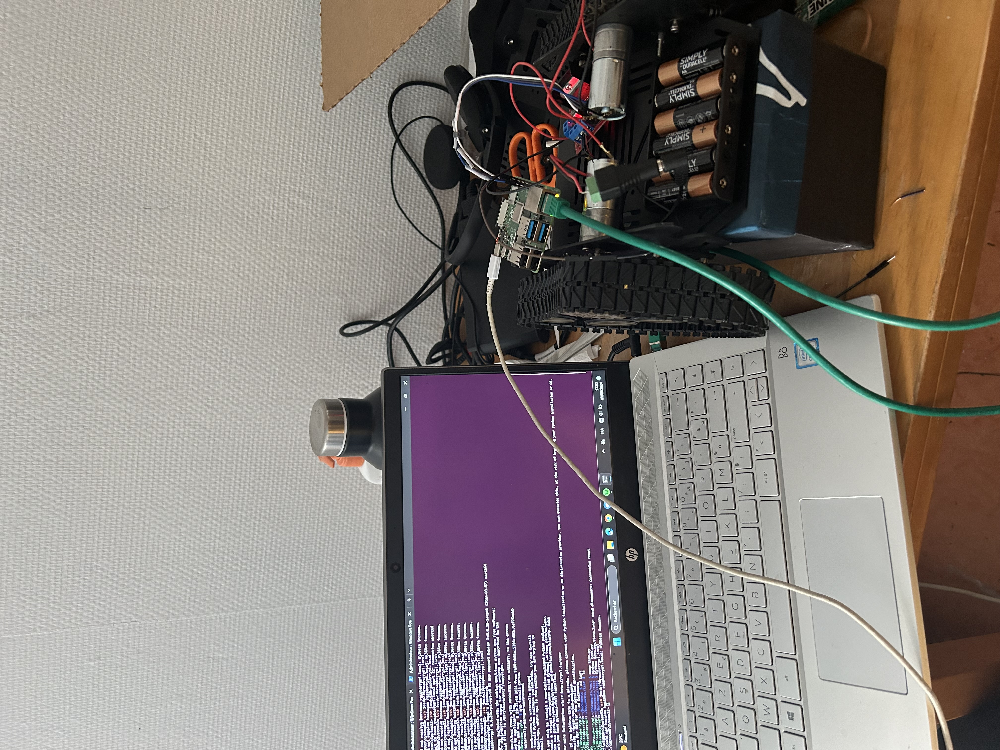
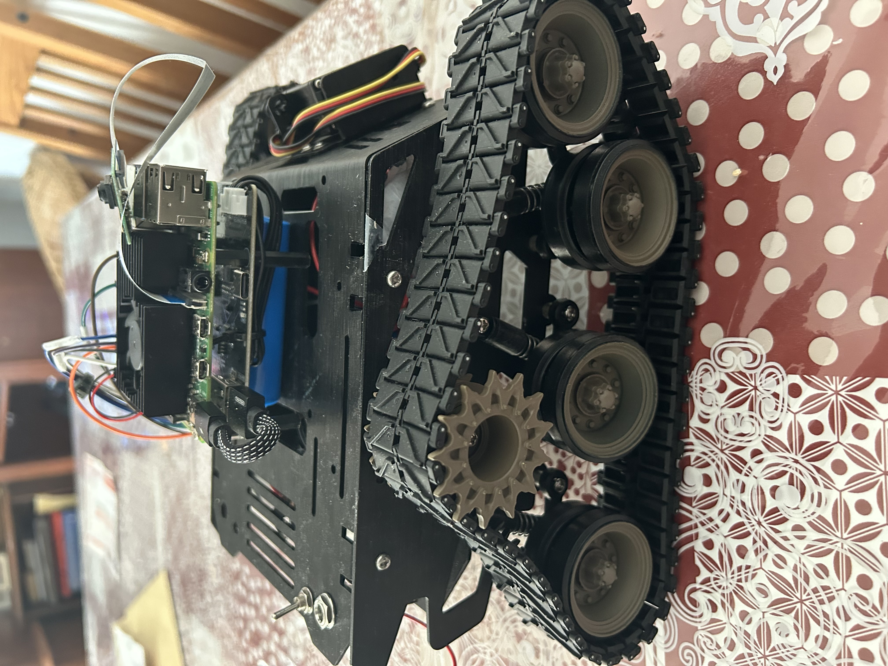
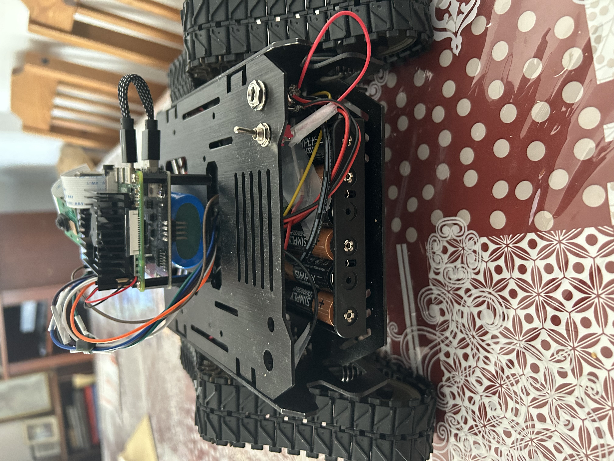
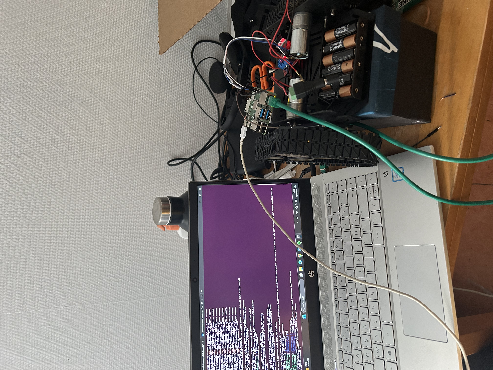

Projets

Winn-E : Tête de robot multimodal
Le projet de tête de robot multimodale, réalisé par une équipe d’étudiants en informatique, vise à faciliter le dépistage précoce de la dyslexie et de la dépression grâce à une interaction ludique et non intrusive. Le système intègre un quiz interactif pour évaluer les compétences liées à la dyslexie et une analyse multimodale (voix, langage, micro-expressions faciales) pour détecter des signes de dépression. Déployé sur une plateforme embarquée Raspberry Pi avec une tête robotique imprimée en 3D, il offre une interaction fluide en temps réel. Les résultats sont prometteurs avec 90 % de précision pour la dyslexie et de bonnes performances pour la dépression, ouvrant des perspectives d’utilisation dans les domaines médical et éducatif.
Contexte : Universitaire et collectif dans une équipe de 5
Rôle : Conception hardware et logiciel embarqué
Outils : Raspberry Pi 4, Arduino, Python, C/C++, Capteurs/actionners, Gestion de projet, Prototypage, Algorithmique avancée, Deep Learning, Machine learning, Linux, Impression 3D
Module : Projet d'intégration
Niveau : Master 1
Année : 2024 - 2025
 
Xplorer : Robot de navigation
Ce projet personnel consistait en la réalisation d’un robot basé sur Raspberry Pi, équipé de nombreux capteurs et d’une caméra, le tout relié à un serveur central chargé de gérer les données collectées. L’architecture mise en place comprenait également des serveurs mail pour l’envoi automatique d’informations, une base de données pour stocker les relevés et un serveur web permettant de piloter et de superviser l’ensemble du système à distance. Cette configuration offrait une prise en main complète du robot depuis n’importe où, combinant surveillance en temps réel et contrôle centralisé.
Contexte : Projet personnel
Rôle : 100% de la réalisation
Outils : Raspberry Pi 4, Python, C/C++, Capteurs/actionneurs
Module : Hors université
Niveau : Licence 3
Année : 2024
Resolution de jeu à 2 joueurs : Type Puissance 4
Ce projet d’intégration avait pour objectif de développer un solveur de Puissance 4 en Java doté d’une intelligence artificielle compétitive. L’équipe a conçu une architecture complète comprenant un moteur de jeu, une interface graphique conviviale et une IA performante basée sur des algorithmes comme MinMax et Alpha-Beta, enrichis de techniques d’optimisation (bitboards, tables de transposition, exploration itérative…). Le programme permet de jouer en mode joueur contre joueur ou joueur contre ordinateur, avec différents niveaux de difficulté et une personnalisation des parties. Ce travail a permis de construire un solveur efficace et interactif, offrant une expérience de jeu à la fois éducative et divertissante, avec des perspectives d’amélioration comme l’ajout de fonctionnalités multijoueurs en ligne ou l’intégration d’algorithmes plus avancés..
Contexte : Universitaire et collectif dans une équipe de 3
Rôle : Conception et développement des solutions d'optimisation du temps de calcul
Outils : Java, Prototypage
Module : Projet de synthèse
Niveau : Licence 3
Année : 2023 - 2024
Microcontroleur : Communication
Ce projet avait pour objectif de mettre en place un système de communication sans fil multimodal entre deux microcontrôleurs STM32F4. L’équipe a développé une solution capable de transmettre et recevoir des messages en code Morse, en utilisant soit un buzzer pour l’émission sonore couplé à un capteur de son, soit une LED infrarouge pour l’émission lumineuse avec un capteur de lumière en réception. Un mécanisme de commutation permettait de passer dynamiquement d’un mode de communication à l’autre, avec une LED d’état pour indiquer le mode actif. Malgré des contraintes de temps et de matériel, le projet a permis de réaliser avec succès la transmission et la réception de messages sonores et lumineux, ouvrant la voie à des améliorations comme l’utilisation de la transformée de Fourier pour mieux distinguer les signaux sonores du bruit ambiant, ou la combinaison simultanée des deux modes pour réduire les erreurs.
Contexte : Universitaire et collectif dans une équipe de 3
Rôle : Définition d'un procole de communication pour chaque mode, encodage et décodage des informations
Outils : STM32F446E, Capteurs/actionneurs, Prototypage, C/C++
Module : Introduction aux microcontrôleurs
Niveau : Licence 3
Année : 2024
Krakken Training
Le projet Krakken Training, réalisé dans le cadre d’une mineure en IoT, avait pour objectif de concevoir un dispositif connecté pour l’entraînement en arts martiaux. Le système repose sur des bras-bâtons motorisés à esquiver ou à bloquer, associés à des coussins de contact permettant de comptabiliser les points grâce à un capteur tactile MPR121. Un capteur ultrason mesure en temps réel la distance entre l’utilisateur et l’appareil afin d’adapter les enchaînements, tandis qu’un module Bluetooth HC-05 assure la communication avec une application mobile pour le suivi et le paramétrage. La conception inclut aussi des considérations de sécurité, d’ergonomie et de design, avec une structure robuste et un contrôle intuitif. Entièrement pensé comme un prototype open-source et open-hardware, ce projet illustre la convergence entre électronique embarquée, programmation et conception mécanique pour proposer un outil d’entraînement innovant et interactif.
Contexte : Universitaire et collectif dans une équipe de 4
Rôle : Conception hardware et developpement serveur et application mobile
Outils : C/C++, Java, Arduino, Android App
Module : IoT
Niveau : Licence 3
Année : 2024
DreaMeal : Restau
Le projet DreaMeal, réalisé dans un cadre universitaire, consistait en la création d’une plateforme de gestion des réservations et des commandes pour un restaurant. Le système permet aux clients de réserver une table, de commander des repas en ligne et, pour les abonnés, de bénéficier d’une interface personnalisée avec la possibilité de livraison à domicile. L’architecture repose sur une base de données PostgreSQL, un serveur web en html, un serveur réseau en Python et un client Java, garantissant une gestion centralisée et sécurisée des informations. Les fonctionnalités incluent l’enregistrement des utilisateurs, la gestion des réservations (création, mise à jour, annulation), la validation par QR code, ainsi que le suivi des commandes. Ce projet met en avant la convergence entre bases de données, réseaux et développement logiciel, tout en offrant une solution pratique et intuitive pour améliorer l’expérience des clients en restauration.
Contexte : Universitaire et collectif dans une équipe de 3
Rôle : Conception architecture réseau
Outils : html, Js, PostgreSQL, TCP, UDP, HTML, CSS
Module : Base de données & Réseaux
Niveau : Licence 3
Année : 2023
Catmull-Clark Subdivision
Ce projet avait pour objectif de reproduire l’algorithme de Catmull-Clark, une méthode de subdivision utilisée en modélisation 3D pour générer des surfaces lissées à partir de maillages polygonaux. L’implémentation a été réalisée entièrement codée à la main, sans recours à des bibliothèques externes, afin de comprendre en profondeur le fonctionnement de l’algorithme. Ce travail a permis de mettre en pratique des notions avancées de géométrie algorithmique et de traitement de maillages, tout en développant des compétences en optimisation et structuration de code pour la manipulation de données graphiques complexes.
Contexte : Universitaire et collectif dans une équipe de 2
Rôle : Développement
Outils : C, OpenGL, Langage Processing
Module : Informatique graphique et traitement d'image
Niveau : Licence 3
Année : 2023
Dressage
Ce projet, réalisé dans le cadre du cours de Génie Logiciel, consistait à développer un jeu de dressage d’animal virtuel basé sur le principe du conditionnement opérant. L’animal évolue dans une maison et interagit avec différents objets ; le joueur peut choisir de le récompenser ou de le punir, ce qui influence l’évolution de plusieurs jauges (sagesse, propreté, jeu, dressage). Le jeu a été conçu avec une architecture modulaire en Java, en intégrant une IHM réalisée par tile mapping et un système de déplacement intelligent utilisant l’algorithme A* pour gérer les mouvements de l’animal et les collisions. Ce projet nous a permis de mettre en pratique les notions de modélisation UML, gestion de projet en équipe et conception d’IHM, tout en abordant la simulation de comportements intelligents dans un environnement interactif.
Contexte : Universitaire et collectif dans une équipe de 3
Rôle : Developpement côté IA et intégration continue
Outils : Java, UML, A*
Module : Génie logiciel
Niveau : Licence
Année : 2023